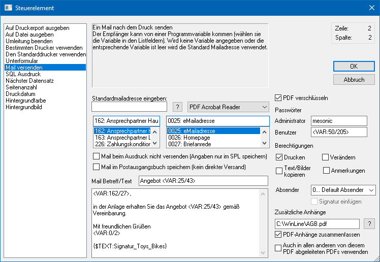
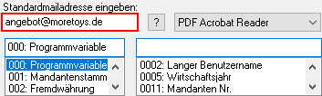
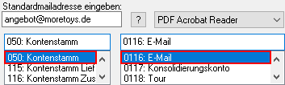
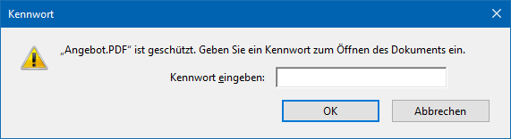
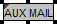
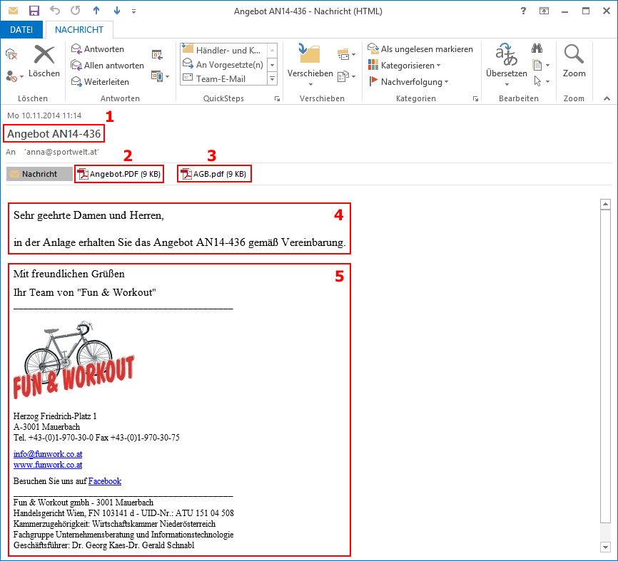

Mit dem Steuerelement "Mail versenden" wird die direkte Einbindung der MAPI-Funktion "Mail" unterstützt.
Hierbei wird das Mail automatisch beim Druck des Formulars versendet (ohne Editiermöglichkeit der E-Mail), wobei das Formular selber als Anlage angehängt wird.

Ø Empfängeradresse
Es gibt zwei Möglichkeiten der Zuordnung:
ü Es wird eine direkte E-Mail Adresse eingeben. Dieses macht dann Sinn, wenn mit diesem Beleg nur eine E-Mail-Adresse angesprochen werden soll.
Beispiel
Für ein internes
Informationssystem soll jeder Beleg an ein internes Postfach gesendet
werden.

ü Es wird eine Variable aus einem
Stammdatensatz eingetragen, In diesem Fall wird jeweils die zu verwendende
E-Mail-Adresse aus dem Stamm herangezogen.
Hierbei erfolgt die Zuordnung über
die Auswahllisten, in welchen die View (d.h. die SQL-Tabelle) und die Variable
(d.h. die SQL-Spalte in einer Tabelle) definiert werden kann. Mit Hilfe des
Icons  kann das Fenster "Variable
suchen" geöffnet werden. In diesem ist es möglich per Volltextsuche nach
Variablen zu suchen.
kann das Fenster "Variable
suchen" geöffnet werden. In diesem ist es möglich per Volltextsuche nach
Variablen zu suchen.
Beispiel
Bei dem Druck eines Belegs soll
automatisch eine E-Mail an den jeweiligen Debitoren geschickt
werden.

Ø Versandformat
Aus der Auswahlbox kann gewählt werden, in welchem Format das Mail versendet werden soll. Dabei gibt es folgende Möglichkeiten:
ü Globale Einstellung
In diesem
Fall wird das Mail gemäß den Einstellungen im Programm WinLine START (Parameter
- Einstellungen - Register "Mail") versendet.
ü SPL Format
Die Datei wird als
mesonic-Spool-Datei verschickt, wobei auch bei mehreren Seiten Ausdruck nur eine
Datei verschickt wird.
ü MHT Format
MHT-Format ist ein
mehrseitiges HTM-Format und kann nur mit dem Internet-Explorer ab Version 5.0
geöffnet werden. Auch hier bei einem mehrseitigen Dokument nur eine Datei
verschickt.
ü HTM Format (als Anhang)
Dieses
Format kann jeder Internet-Browser öffnen. Bei einem mehrseitigen Dokument wird
allerdings für jede Seite eine eigene Datei verschickt.
ü HTM Format (1. Seite ist
Mailtext)
Bei dieser Einstellung wird die erste Seite des Ausdrucks direkt
als Text in das Mail gestellt. Bei mehreren Seiten werden alle Seiten wieder als
eigen Dokumente (jede Seite eine Datei) angehängt. Bei dieser Option wird der
Text, der im Steuerfenster eingegeben werden kann, nicht übermittelt.
ü PDF Acrobat Reader
Der Ausdruck
wird als PDF-Datei konvertiert und versendet. Dabei wird der von mesonic
mitgelieferte PDF-Treiber verwendet. Die Datei kann nur von einem Acrobat Reader
gelesen werden.
ü RTF Format (als Anhang)
Der
Ausdruck wird als RTF-Datei versendet und kann von jedem RTF-fähigem Programm
gelesen werden.
ü Tabulatorgetrennter Text (als
Anhang)
Der Ausdruck wird als Textdatei ausgegeben, die mit Tabulatoren
getrennt ist. Diese Datei kann in jedes Textverarbeitungsprogramm eingelesen
werden.
ü Nur Text (als Anhang)
Der
Ausdruck wird in eine Textdatei ausgegeben und verschickt.
Ø Mail beim Ausdruck nicht versenden (Angaben nur im SPL speichern)
Durch Aktivieren dieser Option wird kein Mail automatisch versandt, sondern es werden die Informationen des Steuerelements (z.B. E-Mail-Adresse, Format, Betreff, usw.) in der Spooldatei gespeichert.
Wird das Formular anschließend aus dem Spooler aufgerufen bzw. die Bildschirmansicht gewählt und der Mail-Button gedrückt, so wird eine neue Mailnachricht geöffnet bei der bereits die im Formular hinterlegten Einstellungen (Mail-Adresse, Betreff, Anhang, etc.) vorbelegt werden.
Ø Mail im Postausgangsbuch speichern (kein direkter Versand)
Durch Aktivieren dieser Option wird die Mail nicht direkt versendet, sondern vorher im Postausgangsbuch unter dem Bereich "Entwürfe" gespeichert.
Hinweis
Wenn im Bereich "Text" mit einem Textbaustein gearbeitet wird, dann muss für die korrekte Darstellung im Postausgangsbuch zusätzlich die Formatierungsinformation {$FORMAT:RTF} hinterlegt werden.
Beispiel
Der Name des Textbausteins lautet "SIGNATUR". Damit der Textbaustein im Postausgangsbuch korrekt dargestellt wird muss {$FORMAT:RTF} {$TEXT:SIGNATUR} hinterlegt werden.
Ø Mail Betreff/Text
In diesen Feldern kann ein Betreff und ein fixer Text hinterlegt werden, der dann bei allen Mails mit übermittelt wird. Dabei können auch Variablen mit der Syntax <VAR: X/Y> eingebaut werden, die dann beim Versenden der Mails durch die entsprechenden Werte ersetzt werden. Des Weiteren stehen folgende Sonderfunktionen zur Verfügung:
ü Textbaustein
Im Text kann mit
der Funktion {$TEXT:<Name des Textbausteins>} auch ein Textbaustein
angegeben werden, der dann auch beim Versenden des Mails berücksichtigt wird
(die Anlage der Textbausteine erfolgt im WinLine START unter "Optionen -
Textbausteine - Textbausteine"). Ein Mail mit einem Textbaustein wird
automatisch nach HTML konvertiert. Wird ein solches Mail versendet, dann werden
die im Textbaustein ggf. verwendeten Bilder automatisch dem Mail als Anlage
hinzugefügt (neben der Datei selber, die den Ausdruck beinhaltet).
Beispiel
Der Name des Textbausteins lautet "SIGNATUR". Wenn der Text dieses Textbausteins in den Fließtext der Mail eingefügt werden soll, dann muss {$TEXT:SIGNATUR} hinterlegt werden.
ü Formatierung
Der eingegebene
Plaintext kann mit der Funktion {$FONT:<FontFamily>} - dies entspricht
{$FONT:Arial} - neben der Schriftgröße mit {$SIZE:<Schriftgröße>px} - dies
entspricht {$SIZE:12px} - formatiert werden.
Mit {$LOCAL_FONT:
<FontFamily>} sowie {$LOCAL_SIZE: <Schriftgröße>px} ist es möglich
lokale Einstellungen zu treffen. Es können damit mehrere Schriftarten sowie
Schriftgrößen verwendet werden.
Mit {$FORMAT:RTF} - diese Option wird
direkt dort eingetragen, wo auch der Textbaustein im cwlpdfe.exe steht ({$TEXT:
<name>}) - kann der Mailtext wie gewünscht im RTF-Format an das
Postausgangsbuch übergeben und versendet werden.
Hinweis
Wenn die Option "Mail im Postausgangsbuch speichern" nicht gesetzt ist, wird direkt gemailt. In solch einem Fall darf die Option {$FORMAT:RTF} nicht gesetzt sein.
Ø PDF verschlüsseln
Durch Aktivierung dieser Option kann das (bei dem E-Mailversand entstehende) PDF-Dokument mit einer Kennwort-Verschlüsselung versehen werden.
Hinweis
Das Sicherheitssystem im Adobe Acrobat Reader lautet "Kennwortschutz".
Achtung
Wenn das PDF-Dokument durch den "AUX MAIL"-Befehl nicht direkt erzeugt wird (z.B. bei Aktivierung der Option "Mail beim Ausdruck nicht versenden (Angaben nur im SPL speichern)"), dann werden die Informationen zur PDF-Verschlüsselung ebenfalls in der SPL-Datei gespeichert.
Bei einer nachträglichen Umwandlung innerhalb von WinLine (SPL-Datei in ein PDF-Dokument) werden die Einstellungen zur PDF-Verschlüsselung dann aus der SPL-Datei ausgelesen und bei der Generierung des PDF-Dokuments berücksichtigt.
Ø Passwörter
An dieser Stelle können für die Modi "Administrator" und "Benutzer" entsprechende Passwörter hinterlegt werden. Dabei ist es möglich feste Hinterlegungen zu treffen (z.B. "ABC123") oder mit Variablen zu arbeiten (z.B. "<VAR:50/205>").
Hinweis
Die Länge des Passwortes darf jeweils maximal 15 Zeichen betragen!
Achtung
Nur wenn unter "Benutzer" ein Passwort hinterlegt wurde erfolgt bei dem Öffnen des PDF-Dokuments im Adobe Acrobat Reader eine Kennwortabfrage. Dadurch würde das Dokument automatisch im "Benutzer"-Modus (mit den entsprechenden Berechtigungen) gestartet werden.

ü Administrator
Der Administrator
erhält die vollen Rechte für das Arbeiten mit dem PDF-Dokument.
ü Benutzer
Der Benutzer erhält
die unter "Berechtigungen" eingestellten Rechte für das Arbeiten mit dem
PDF-Dokument.
Ø Berechtigungen
An dieser Stelle werden die Berechtigungen für den "Benutzer" hinterlegt.
Acrobat-Berechtigungen
Folgende Berechtigungen (sogenannte "Dokumenteneinschränkungen") sind in einem PDF-Dokument (lt. Adobe Acrobat Reader) möglich:
ü Drucken
ü Dokumentzusammenstellung
ü Kopieren von Inhalten
ü Kopieren von Inhalten für Barrierefreiheit
ü Seitenentnahme
ü Kommentieren
ü Formularfelder ausfüllen
ü Unterschreiben
ü Vorlagenseiten erstellen
Hinweis
Grundsätzlich sind die Dokumenteneinschränkungen "Formularfelder ausfüllen" und "Kopieren von Inhalten für Barrierefreiheit" auf "Zulässig" gesetzt.
mesonic Formular Editor-Berechtigungen
Folgende Einstellungen können getroffen werden und wirken sich wie folgt auf die Dokumenteneinschränkung aus:
ü Drucken
Die
Dokumenteneinschränkung "Drucken" wird auf "Zulässig" gesetzt.
ü Verändern
Die
Dokumenteneinschränkung "Ändern des Dokuments" wird auf "Zulässig" gesetzt.
Achtung
Diese Dokumenteneinschränkung ist nur mit dem Programm "Adobe Acrobat PRO" ersichtlich und entsprechend zu nutzen!
ü Text/Bilder kopieren
Die
Dokumenteneinschränkung "Kopieren von Inhalten" wird auf "Zulässig" gesetzt.
ü Anmerkungen
Die
Dokumenteneinschränkung "Kommentieren" wird auf "Zulässig" gesetzt.
Ø Absender
An dieser Stelle kann definiert werden, mit welchem zugeordneten E-Mailkonto der Versand stattfinden soll. Die Definition hierzu findet im WinLine START unter "Parameter - Einstellungen - Register "Abs-Adressen" -> Definition erfolgt pro Benutzer" statt.
Ø Signatur einfügen
Wurde ein spezieller Absender gewählt, so kann an dieser Stelle definiert werden, ob die ggfs. hinterlegte Signatur beim Versand berücksichtigt werden soll.
Ø Zusätzliche Anhänge
Wenn neben dem aktuellen Formular weitere Dateien an die Mail
angehängt werden sollen, dann können die Dateien an dieser Stelle angegeben
werden. Mit Hilfe des Icons wird
hierzu der Datei-Explorer geöffnet.
Hinweis
Sollten mehrere Dateien angehängt werden, dann müssen diese per Semikolon getrennt werden.
Ø PDF-Anhänge zusammenfassen
Mit Hilfe dieser Option wird der eigentliche Druck und alle "zusätzlichen Anhänge" (des Typs PDF-Datei) in einer PDF-Datei für den Mailversand zusammengefasst.
Ø Auch in allen anderen von diesem PDF abgeleiteten PDFs verwenden
Durch Aktivierung dieser Option wird das Steuerelement automatisch an alle Formulare weitergereicht, welche dasselbe PDI aufweisen und in denen kein "AUX MAIL" vorkommt.
Hinweis
Die Option kann nur im jeweiligen Basisformular (Formularname = PDI) aktiviert werden.
Darstellung im Formular
Im Formular werden Steuerelemente des Typs "Mail versenden" wie folgt dargestellt:
ü

Zusätzlich wird in der Buttonleiste "Elementeigenschaften" der Inhalt (gemäß der Maildefinition - hier u.a. mit "PDF-Verschlüsselung") wie folgt dargestellt:
ü
Beispiel - E-Mail per Steuerelement "Mail versenden"
Eine per Steuerelement erzeugte und versendete E-Mail könnte wie folgt aussehen:

ü 1 - Betreff (fixer Text und Variable)
ü 2 - Formular als PDF
ü 3 - Zusätzlicher Anhang
ü 4 - Text (fixer Text und Variable)
ü 5 - Textbaustein (im Text hinterlegt)